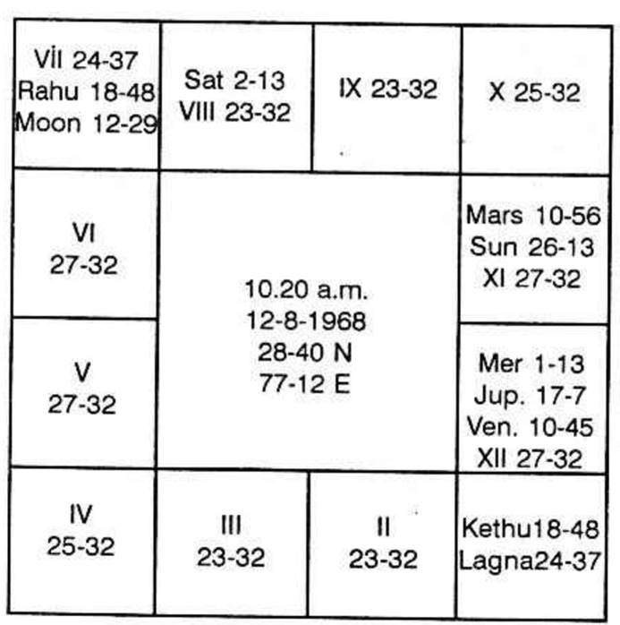

The planets which are said to give vision or cause blindness are Moon, Sun and Venus. Sun and Moon throw light and remove darkness. As regards Venus, in Hindu Mythology it is said that Venus is the Priest or the Preceptor of the Demons. It is presumed to be without one eye, as it is said that one eye was affected by Lord Vishnu when he took the Avathar of "Vamana". Hence if one is to be blind, one should run the period of Sun or Moon or Venus or those deposited in their constellations or any planet deposited in the constellation of the occupant or owner of second house and sub of the significator of 12th house who is connected with Sun or Moon or Venus. This is Krishnamurti Padhdhati.
But according to traditional astrology there are various rules and let me quote a few of the many. After reading, you will find them to be very general; we should be blind and deaf according to these rules.
1. If lord of Lagna is conjoined with Sun and Venus and if they occupy any of the three evil houses 6 or 8 or 12 one will be blind from birth itself.
2. If the two evils, Saturn and Mars, are in 5 or 9 and Rahu is in the Lagna along with eclipsed Sun, one will be blind from birth.
3. If lords of 1 and 2 are in 6 or 8 or 12 and are conjoined with Sun and Venus, one will be born blind. (Persons born during 8 planets configuration at night between 7 and 9 P.M. in Leo Lagna are not blind).
4. If Moon and Mars cause Chandramangala yoga in 6 or 8 or 12, one become blind, due to fall.
5. Similarly, Moon and Jupiter conjoined (causing Gajakesari yoga) be in 6 or 8 or 12, one becomes blind due to sexual excesses.
6. If Sun and Moon are conjoined in 1, 3, 4, 7 or 10, one becomes blind. That is, one will use spectacles.
7. If Mars occupies the sign belonging to an evil planet which is the first or fourth or seventh or tenth house, one is blind.
8. If one is born in Cancer or Leo and Sun is in the 7th one becomes blind.
9. If lords of 1, 2 and 12 conjpin Venus and all of them are together in 6 or 8 or 12, one becomes blind.
10. If there is an evil planet in the second house conjoined with Venus and Moon, one is blind.
11. Malefics in houses 4 and 5 make a person blind.
12. Moon in 6 or 8 or 12 receiving aspect from a malefic causes blindness.
13. Sun and Moon in 12 not aspected by benefics, cause loss of vision.
14. If one is born in Leo Lagna and Saturn or Venus occupy the Lagna, one suffers from blindness.
15. Saturn in 12, Moon in 2, and Sun in 8 causes loss of vision.
16. Moon in 6, Sun in 8, Mars in 12, and Saturn in 2 deprives one of his eyesight.
17. Saturn in the fourth house and receiving aspect from another malefic, causes loss of sight.
18. Rahu in 5 to Venus or to Lagna and is aspected by Sun makes one blind.
19. Moon and Venus in 6 or 8 or 12 causes night blindness.
20. Moon, Venus and lord of 2 in the Lagna cause night blindness.
21. Lords of 1 and 2 in 6 or 8 or 12 indicate loss of eyes.
22. Mars in 12 affects left eye, whereas Saturn in 2 affects the right eye.
23. If the lagna is occupied by lords of 2, 6 and 10 with Venus, due to the orders of the Government, one will lose his eye (Not applicable, nowadays, thank God!)

Thus there are many more rules. Traditional Astrologers must cram these general rules and should remember all these doubtful rules at the time of application to read the result. One should not forget that there is a limit to which such rules can be committed to memory, apart from the utility of such rules in the present day conditions.
Let us see how far the above rules apply. Also how K.P. explains.
The horoscope of a young child whose birthday came a few days ago is given above. The child is blind from the birth.
Saturn Dasa balance at the time of birth was 5 years, 11 months, 16 days. Mars Bhukti was operating at the time of birth and Moon during Epoch.
According to the Hindu method no evil planet is in 2 or 12, (Kethu is in Lagna Bhava). Only Jupiter is in 12 according to the traditional method. 11th house which is considered to be one which will invariably offer desirable results is tenanted by Sun, Mercury and Venus. Nowhere it is said that these planets in 11 will cause blindness. According to tradition, Saturn comes to the 7th Bhava. None of the 23 rules given above finds a place.
What do the Westerners say? Let us see what Sepharial and Carter have mentioned in their books. "The Manual of Astrology" and "Encyclopaedia of Psychological Astrology" respectively. Sepharial (Page 78 – Physical Peculiarities ) says as follows:
"The eyes: The Moon being with the Pleiades (in Taurus 29°) or in ASSELLI (Leo 0° or with Antaras (In Sagittarius 8°) or the Sun in these three places afflicted by Mars from an angle, the person born may become blind.
The same result follows from the Moon in opposition to the Sun, or the Moon in conjunction with the Sun, in any of these nebulous parts of the zodiac. When either the Sun or Moon is in or near Taurus 29° Leo 6° or Sagittarius 8° and afflicted by any planet, defective eye sight is the result, the cause differing according to afflicting planet.
The Sun in Aquarius, afflicted by Saturn, especially by the opposition or conjunction, stone blindness frequently results. The sign Aquarius corresponds to the etheric vibrations, and therefore has affinity with the sense of sight.
The Sun and Moon being in opposition from Aries and Libra give weak sight, and sometimes sore eyes. The same if the Sun or Moon be in Aries and afflicted by Mars or Saturn.
Pluto rising, squared by the Sun and Moon will also cause weak sight and accentuate liability to blindness, more especially if the signs Taurus, Leo or Aquarius are involved.
If a malefic planet occupies any of the nebulous parts of the Zodiac already referred to, and afflict the Sun or Moon by aspect then danger of blindness will arise from an accident, more particularly if the malefic be elevated above the luminary.
In this matter it is better to have the Moon afflicted than the Sun, for it gives greater hope of relief.
Sight (Eye), (Carter) Visual defects are said to occur when the luminaries are afflicted in or from the nebulous parts of the zodiac. It need hardly be said that the analogical connection between nebula and clouded sight upon which this tradition be based, must not be taken as the only foundation of the thesis, which is well supported by the facts.
The following parts of the zodiac especially have this effect:
8° Gemini – Sagittarius (Aldebaran and Antares).
6° Leo – Aquarius (the Aselli)
3° Cancer – Capricorn
29° Taurus – Scorpio (the Pleiades).
It will be noted that not all of these are coincident with notable nebulae.
Affliction in the centre of mutable signs is very common. Strong bad aspects involving these areas and the luminaries, especially if in angles, are very liable to cause serious trouble.
As ascending signs, Gemini, Aquarius and Capricorn probably most often have defective sight. Gemini has often very quick and keen vision, but there is generally some defect of focus, etc.
The luminaries in strong mutual affliction nearly always cause unequal sight with the two eyes.
Numerous examples are given in various text-books.
It should be borne in mind that Mercury has much to do with the entire nervous system, of which the eyes are the most developed and exposed part, and afflictions to this planet often cause myopia.
Squinting is usually indicated by Mercury afflicted Mars or Uranus, and perhaps by Neptune with a Mars sign is involved.
Cataract: It would seem that the horoscope features mentioned under sight will usually appear more or less prominently and an affliction of Mercury from Neptune is common. This is for cataract.
Second house shows right eye; 12th house indicates left eye. Disease is indicated by the sixth house; 8th the danger, 12th the defect.
As per Krishnamurti Padhdhati Ketu is in 12 in the above example chart. Any planet in the constellation of Ketu shows the defect, and depending on the nature of the planet and the houses signified by it, the nature of the defect is to be ascertained. Saturn is in Aswini; Mercury and Venus are in Makam, in Ketu star. Therefore these three planets denote defect only when the 12th cusp sub lord denotes disease or defect.
The 12th cusp is in Sun's star, Moon sub. Moon is in 6th house as per K.P. But tradition says that Moon is in 7. Hence one can expect disease or defect. As nodes offer the result of the planet by which they are aspected, Ketu has to give the results of Moon also as Moon aspects Ketu. Further, Ketu is in Moon's constellation. As Moon and Sun are the luminaries giving light to us, and when Moon is spoiled by being the sub-lord of the 12th cusp and is in 6, vision is affected. The epoch of the child was during Saturn Dasa Moon sub period. As Saturn by nature is a planet for deficiency and Moon is for vision, the child has no perfection in the development of the ocular system during intra-uterine life. Therefore if the sub-lord of the 12th cusp is in 6, the house of disease, and if the sub-lord is in the constellation of the planet occupying or owning 6 or 8 or 12 it is definite that one will have the defect from the time when the significators conjointly operate. If Saturn Dasa Moon Bhukti is to operate at some age, then the child will become blind then.
Any Cure: The dasa that are to run are Saturn, Mercury, Ketu and Venus. Ketu is in 12 in the constellation of Moon in 6. Saturn, Mercury and Venus are in Ketu star. Hence cure is out of question.
Longevity of the child: Saturn Dasa, Jupiter Bhukti, Venus Anthra, Mercury Shookshma is anxious, i.e. around August 1973.